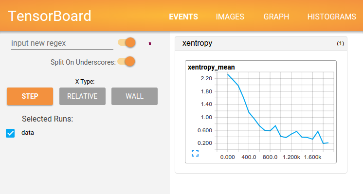

TensorBoard 涉及到的运算，通常是在训练庞大的深度神经网络中出现的复杂而又难以理解的运算。
为了更方便 TensorFlow 程序的理解、调试与优化，我们发布了一套叫做 TensorBoard 的可视化工具。你可以用 TensorBoard 来展现你的 TensorFlow 图像，绘制图像生成的定量指标图以及附加数据。
当 TensorBoard 设置完成后，它应该是这样子的：

TensorBoard 通过读取 TensorFlow 的事件文件来运行。TensorFlow 的事件文件包括了你会在 TensorFlow 运行中涉及到的主要数据。下面是 TensorBoard 中汇总数据（Summary data）的大体生命周期。
首先，创建你想汇总数据的 TensorFlow 图，然后再选择你想在哪个节点进行汇总(summary)操作。
比如，假设你正在训练一个卷积神经网络，用于识别 MNISt 标签。你可能希望记录学习速度(learning rate)的如何变化，以及目标函数如何变化。通过向节点附加scalar_summary操作来分别输出学习速度和期望误差。然后你可以给每个 scalary_summary 分配一个有意义的 标签，比如 'learning rate' 和 'loss function'。
或者你还希望显示一个特殊层中激活的分布，或者梯度权重的分布。可以通过分别附加 histogram_summary 运算来收集权重变量和梯度输出。
所有可用的 summary 操作详细信息，可以查看summary_operation文档。
在TensorFlow中，所有的操作只有当你执行，或者另一个操作依赖于它的输出时才会运行。我们刚才创建的这些节点（summary nodes）都围绕着你的图像：没有任何操作依赖于它们的结果。因此，为了生成汇总信息，我们需要运行所有这些节点。这样的手动工作是很乏味的，因此可以使用tf.merge_all_summaries来将他们合并为一个操作。
然后你可以执行合并命令，它会依据特点步骤将所有数据生成一个序列化的Summary protobuf对象。最后，为了将汇总数据写入磁盘，需要将汇总的protobuf对象传递给tf.train.Summarywriter。
SummaryWriter 的构造函数中包含了参数 logdir。这个 logdir 非常重要，所有事件都会写到它所指的目录下。此外，SummaryWriter 中还包含了一个可选择的参数 GraphDef。如果输入了该参数，那么 TensorBoard 也会显示你的图像。
现在已经修改了你的图，也有了 SummaryWriter，现在就可以运行你的神经网络了！如果你愿意的话，你可以每一步执行一次合并汇总，这样你会得到一大堆训练数据。这很有可能超过了你想要的数据量。你也可以每一百步执行一次合并汇总，或者如下面代码里示范的这样。
merged_summary_op = tf.merge_all_summaries()
summary_writer = tf.train.SummaryWriter('/tmp/mnist_logs', sess.graph)
total_step = 0
while training:
total_step += 1
session.run(training_op)
if total_step % 100 == 0:
summary_str = session.run(merged_summary_op)
summary_writer.add_summary(summary_str, total_step)现在已经准备好用 TensorBoard 来可视化这些数据了。
输入下面的指令来启动TensorBoard
python tensorflow/tensorboard/tensorboard.py --logdir=path/to/log-directory这里的参数 logdir 指向 SummaryWriter 序列化数据的存储路径。如果logdir目录的子目录中包含另一次运行时的数据，那么 TensorBoard 会展示所有运行的数据。一旦 TensorBoard 开始运行，你可以通过在浏览器中输入 localhost:6006 来查看 TensorBoard。
如果你已经通过pip安装了 TensorBoard，你可以通过执行更为简单地命令来访问 TensorBoard
tensorboard --logdir=/path/to/log-directory进入 TensorBoard 的界面时，你会在右上角看到导航选项卡，每一个选项卡将展现一组可视化的序列化数据集 。对于你查看的每一个选项卡，如果 TensorBoard 中没有数据与这个选项卡相关的话，则会显示一条提示信息指示你如何序列化相关数据。
更多更详细的关于如何使用 graph 选项来显示你的图像的信息。参见 TensorBoard:图表可视化
原文地址：TensorBoard:Visualizing Learning 翻译：thylaco1eo 校对：lucky521